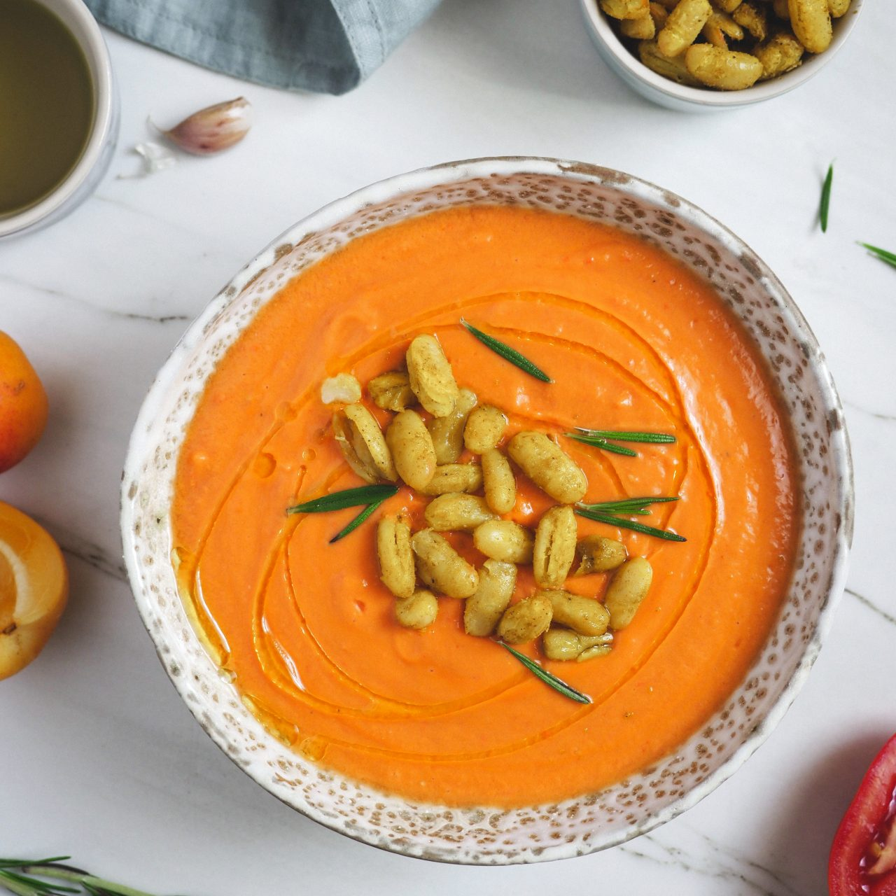

Categoría - Sin lactosa
Recetas sin lactosa

Tortilla de patatas
Hoy os comparto una receta de la que estoy muy orgullosa por dos motivos: 1. Me ha
salido riquísima de la muerte....
Leer más...

Tortitas de camaron
¡Hola a tod@s! Últimamente me pedís mucho que suba recetas de dulces sin gluten, y
como
a mí me gusta complacer a tod@s ;) ...
Leer más...

Salmorejo
¡Hola a tod@s! Hoy os regalo una de mis mejores recetas de tortitas: los pancakes de
avena y plátano de mi segundo ...
Leer más...

Baba ganoush
¡Hola a tod@s! El baba ganoush es una crema de berenjenas parecida al hummus que
también
procede del recetario árabe...
Leer más...

Bizcocho de chocolate
¡Hola a tod@s! Como ya sabéis, este año pasé mi cumpleaños en confinamiento, como
much@s
de
vosotros seguramente…
Leer más...

Humus
Os traigo una opción para acompañar en cualquier pica-pica que se preste. ¡Y esta
triunfa
¡seguro!
Leer más...
Nuestras favoritas


Macarrones en una macarrones-en-una-olla
En vez de las típicas magdalenas de toda la vida te recomendamos que pruebes a hacer estas con el toque especial que le da el jengibre. Seguro que repites.

Bizcocho de café y chocolate
Delicioso bizcocho de café y chocolate sin azúcar. Es súper fácil de preparar y muy inclusivo, ya que además no lleva ni harina, ni gluten ni lactosa.